Following 08 Assembly and 10 Signal. The ground stays #12251F. Only accentPrimary and accentOnDark move, and they move across five palette relationships — complementary, split complementary, triadic, analogous and monochromatic. Every accent clears 4.5:1 as serif italic on that ground and 4.5:1 for its button label. Five of the twelve show the work in three vertical columns, each one placed and paced differently; the other seven use mechanisms that have not appeared in the previous three sets. The copy is identical in all twelve.
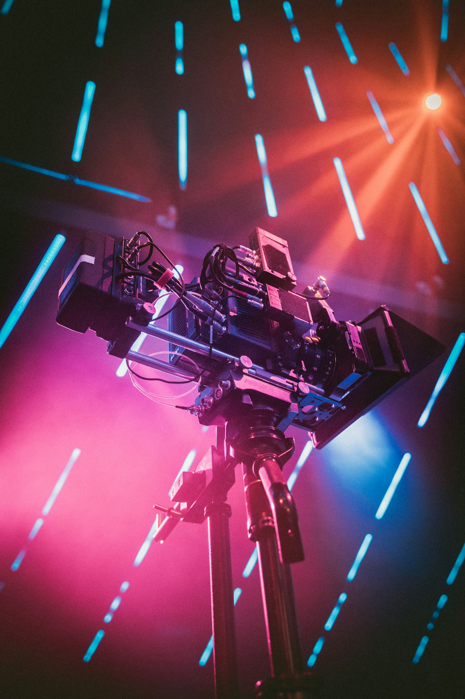
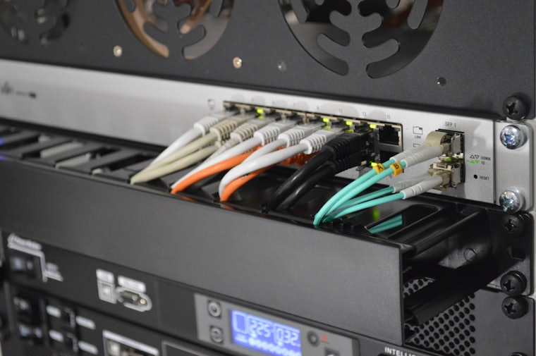
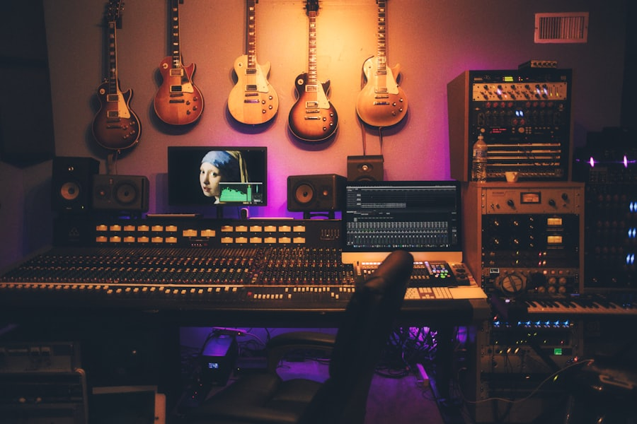
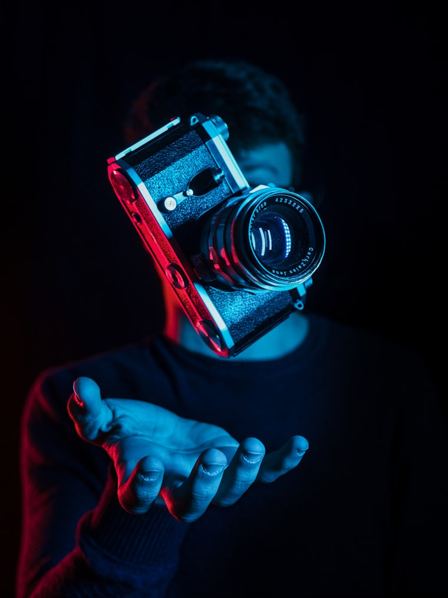
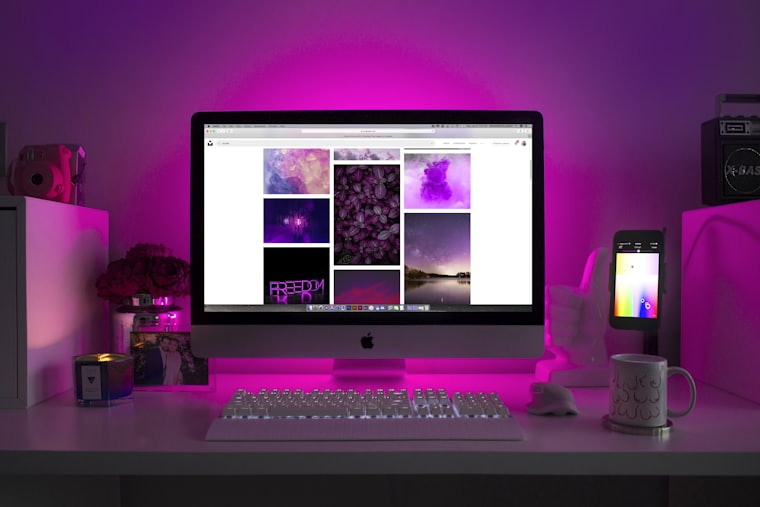
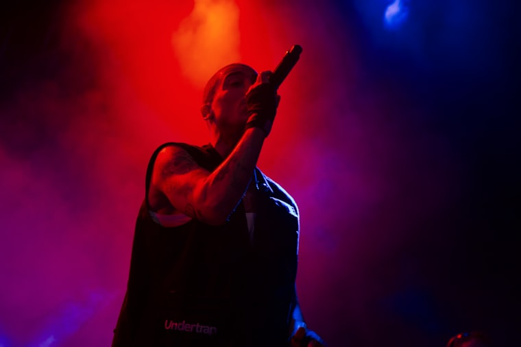
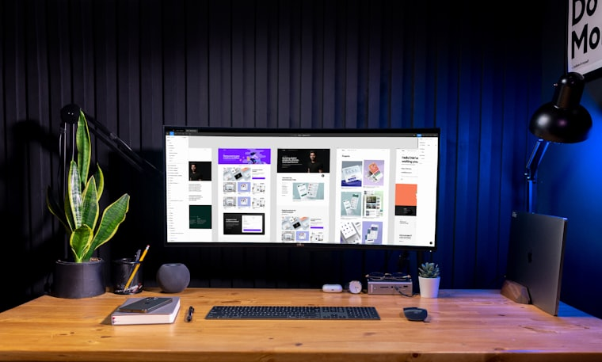
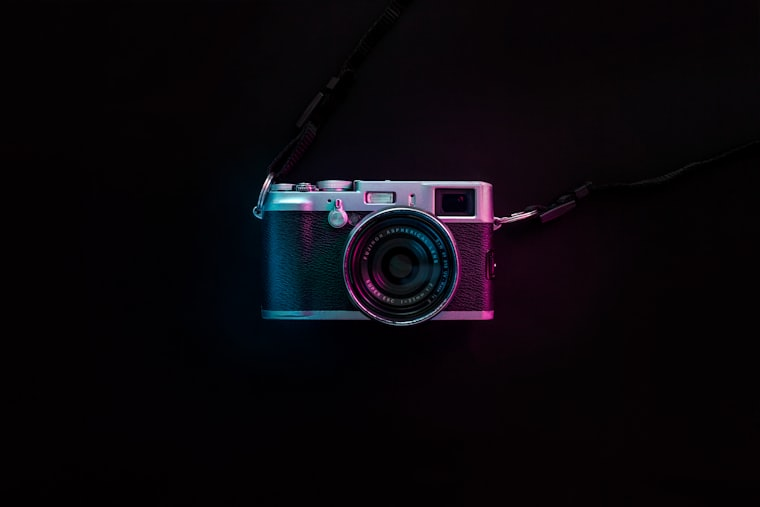
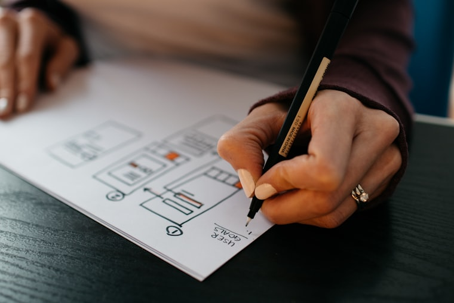
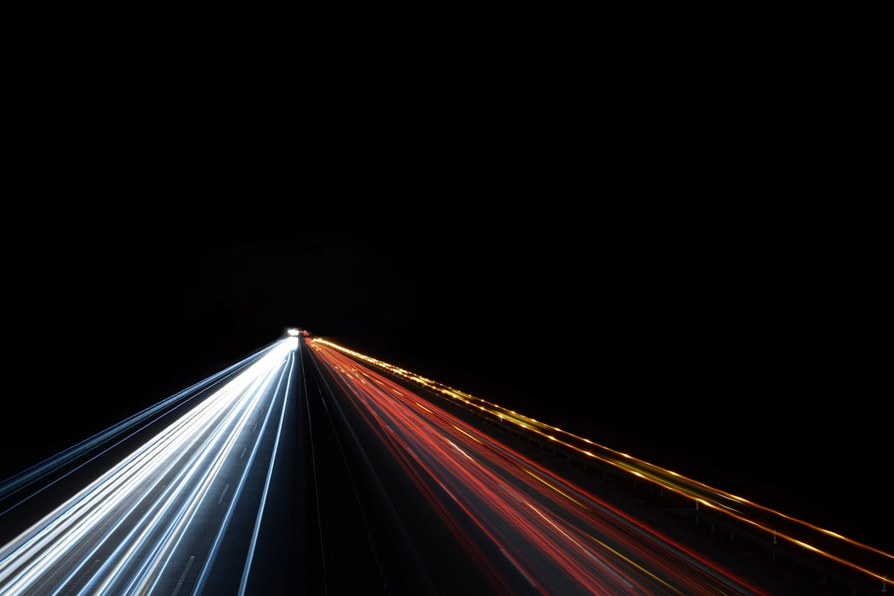
Design, video, AI-powered content, motion and product visuals — produced by a flexible creative team that helps businesses create high-quality content efficiently and at better value.
Project-based when you need it. Ongoing when you need more.
RosewoodA contour map drawn on canvas — eight nested rings whose radius is modulated by four sine terms per angle, so they read as topography rather than as circles. The centre leans toward the pointer and the ring phase advances with the scroll. Three columns of work run the full width behind the type, all going up together at one speed, held back to half opacity with a scrim through the middle. #E8607F · complementary to the ground · 4.89:1
02 nextDesign, video, AI-powered content, motion and product visuals — produced by a flexible creative team that helps businesses create high-quality content efficiently and at better value.
Project-based when you need it. Ongoing when you need more.
Drum 000°
BloomA caustic web in GLSL — the bright net you get on the floor of a pool, built by folding the sampling point back through itself five times and taking the reciprocal of the distance, so the light gathers into lines instead of drifting into cloud. Scroll speed tightens the web and the cursor moves where it gathers. The work is papered round a drum turning on its own vertical axis; the scroll drives it and pointing at it slows it to a crawl. #F27ABA · complementary to the ground · 6.31:1
03 next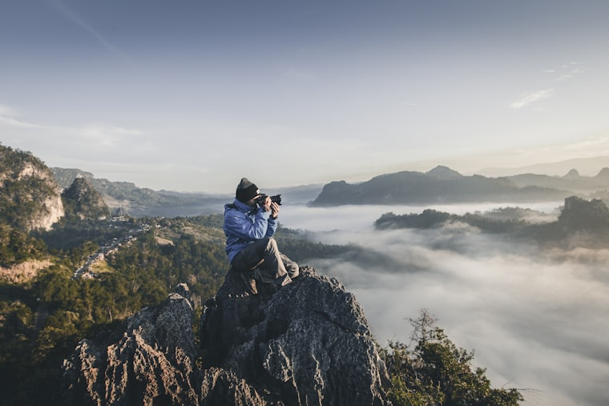
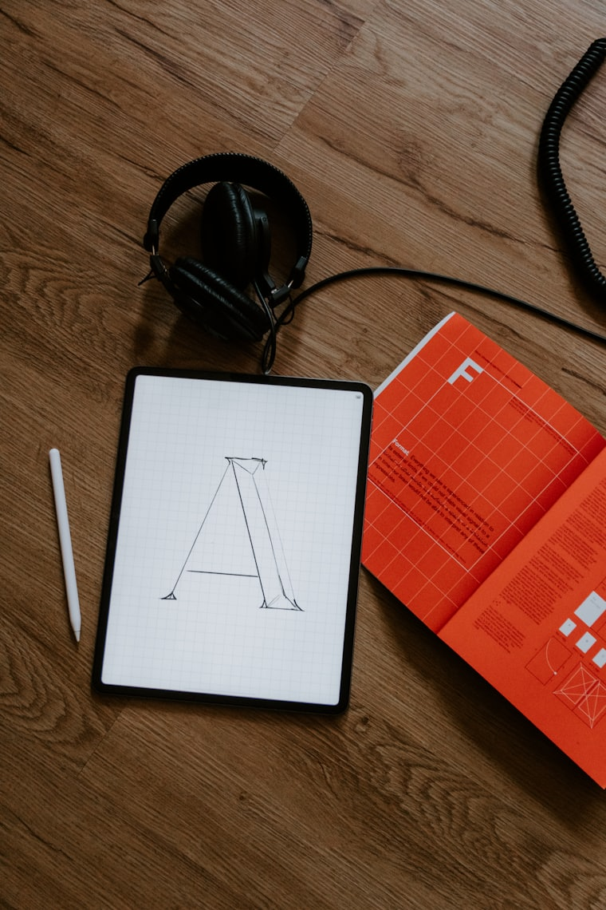
Design, video, AI-powered content, motion and product visuals — produced by a flexible creative team that helps businesses create high-quality content efficiently and at better value.
Project-based when you need it. Ongoing when you need more.
EmberA halftone screen on canvas — a fixed grid of about thirteen hundred dots whose radius is set by a plane wave crossing the field, with a bulge that follows the cursor and a second, slower wave running against the first. Three columns, but split: one narrow column down the left edge and two of unequal width up the right, so the type sits in the channel between them. Three meters under the copy show the three rates. #F2695E · split complementary, warm half · 5.31:1
04 nextDesign, video, AI-powered content, motion and product visuals — produced by a flexible creative team that helps businesses create high-quality content efficiently and at better value.
Project-based when you need it. Ongoing when you need more.
Corridor 06
OrchidA Truchet tiling in GLSL — every cell in the grid draws one of two quarter-arc pairs depending on a hash of its coordinates, and because the hash is re-seeded slowly, the whole weave keeps rebuilding itself into new continuous paths. Grid density rides the scroll and the field turns under the cursor. The work is a corridor: six plates receding on a shared axis, coming forward continuously, the whole corridor tipping toward the pointer. #EC8ADF · split complementary, violet half · 7.09:1
05 next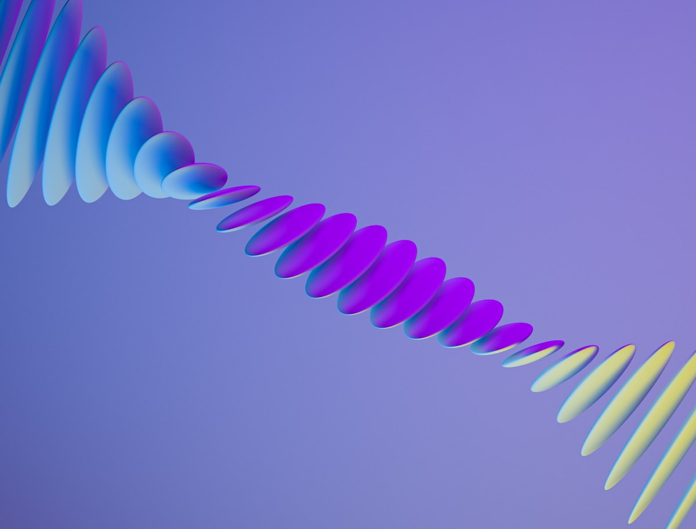
Design, video, AI-powered content, motion and product visuals — produced by a flexible creative team that helps businesses create high-quality content efficiently and at better value.
Project-based when you need it. Ongoing when you need more.
Scrubbed
BrassA shard field on canvas: a jittered lattice triangulated into about two hundred faces, each one filled at a brightness set by a plane wave crossing the field, so the facets light up in sweeps. The vertices lean toward the cursor and spring back. Three columns down the left with the type on the right, the middle one twice the width of its neighbours and running the other way — and none of them moves on its own. Stop scrolling and they stop. #E0A62E · triadic, amber third · 7.38:1
06 nextDesign, video, AI-powered content, motion and product visuals — produced by a flexible creative team that helps businesses create high-quality content efficiently and at better value.
Project-based when you need it. Ongoing when you need more.
Focus
IrisRadial warp streaks on canvas — a hundred and ninety lines drawn outward from a vanishing point that follows the cursor, their length set by how fast you are scrolling, so the field stretches into a warp on a flick and settles into a starfield when you stop. The work is a rack focus: three plates on three planes, only ever one of them sharp, and the scroll pulls the focal plane from the far one to the near one. Point at any of them and focus goes there. #CE8AF2 · triadic, violet third · 6.52:1
07 nextDesign, video, AI-powered content, motion and product visuals — produced by a flexible creative team that helps businesses create high-quality content efficiently and at better value.
Project-based when you need it. Ongoing when you need more.
Eleven degrees
JadeTwenty-eight strings hung down the frame on canvas, each one a damped spring: the pointer pushes the ones it passes and they ring back through zero and settle, which is why the field keeps moving after the cursor has gone. The scroll adds a slow sway across all of them. The work is three columns of unequal width run as one band turned eleven degrees, all three going the same way, each at its own rate. #66E378 · analogous, green side · 9.79:1
08 nextDesign, video, AI-powered content, motion and product visuals — produced by a flexible creative team that helps businesses create high-quality content efficiently and at better value.
Project-based when you need it. Ongoing when you need more.
Board — running
LagoonA kaleidoscope in GLSL: the plane is taken to polar coordinates, the angle folded into a wedge, and a warped noise field sampled inside it, so whatever the noise does is mirrored around the centre. The wedge count breathes between six and twelve, the whole figure turns with the scroll and re-centres on the cursor. The work is a split-flap board — five rows, each on its own clock, always turning the same way. Point at it and it holds. #4FCEE8 · analogous, teal side · 8.65:1
09 nextDesign, video, AI-powered content, motion and product visuals — produced by a flexible creative team that helps businesses create high-quality content efficiently and at better value.
Project-based when you need it. Ongoing when you need more.
Inertia
VerdantRings on water, drawn on canvas: the pointer drops one wherever it moves fast enough, a slow metronome drops one anyway so the field is never still, and each ring thins as it grows. Where two cross they brighten. The three columns are centred and the copy is built around them — headline above, calls to action below — and they run on inertia: the scroll gives them velocity and they coast down to nothing on their own. #3BE8A8 · monochromatic with the ground · 10.15:1
10 nextDesign, video, AI-powered content, motion and product visuals — produced by a flexible creative team that helps businesses create high-quality content efficiently and at better value.
Project-based when you need it. Ongoing when you need more.
Rostrum 00.0 / 00.0
ClaretAn inverse-radius tunnel in GLSL. Depth is one over the distance to the axis, which is exactly what perspective does to a corridor, so the rings crowd toward the vanishing point without a march ever being run. The axis bends toward the cursor and scroll speed sets how fast you travel down it. The work is one frame under a rostrum camera: the plate is more than twice the width of its gate, and the gate tracks across and pushes in as the hero is scrolled, with the cursor trimming the height. This is the one hero that takes the complementary hue to both ends — light rose in the type, deep wine in the button. #F0A8B8 on the ground, 8.39:1 · #7E1B33 fill, label 9.47:1
11 nextDesign, video, AI-powered content, motion and product visuals — produced by a flexible creative team that helps businesses create high-quality content efficiently and at better value.
Project-based when you need it. Ongoing when you need more.
CinderSixty-four bars stood up across the frame on canvas, their heights the sum of three sines running at different rates with a bulge that swells wherever the cursor is, so it reads as a level meter rather than as decoration. Scroll speed raises the whole field. The work is an accordion of five bands down the right: the scroll steps which one is open, and pointing at any of them takes it over. #F0A6E6 on the ground, 8.65:1 · #5B2470 fill, label 10.25:1
12 nextDesign, video, AI-powered content, motion and product visuals — produced by a flexible creative team that helps businesses create high-quality content efficiently and at better value.
Project-based when you need it. Ongoing when you need more.
Filled 0 / 8
AuroraThe one background with no canvas anywhere: three conic-gradient discs, blurred once by the compositor and after that only ever moved, counter-rotating and leaning into the cursor. It costs a transform per frame and nothing else. The work is a grid of eight that fills one cell at a time as the hero is scrolled and empties again as it leaves, so the grid is the scroll position. #F5928A on the ground, 7.15:1 · #8E2422 fill, label 8.16:1
end